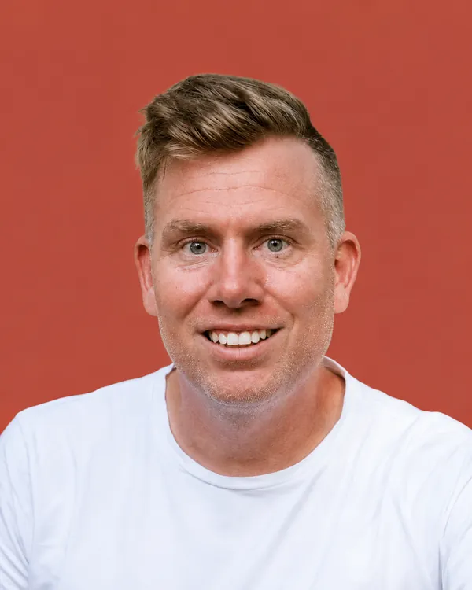

Jan Gronych
Zdravotnický záchranář
Jsem Šumperan každým coulem. Narodil jsem se zde, chodil do školy, maturoval na místní průmyslovce a hrál hokej za šumperské Mladé Draky. Mám tu rodinu, přátele i práci a Šumperk je pro mě domov se vším, co k němu patří. Jako zdravotnický záchranář působím u Zdravotnické záchranné služby Olomouckého kraje a na oddělení ARIP v šumperské nemocnici. Pomáhám lidem v nejtěžších chvílích a stále se ve svém oboru vzdělávám. Díky zásahům v Jeseníkách dobře znám také rizika spojená se sportem, význam prevence a znalosti první pomoci. Sport je důležitou součástí mého života i života mé dcery. V zastupitelstvu chci prosazovat spravedlivou podporu sportovních klubů, pomoci najít dobrou budoucnost šumperským tenisovým kurtům a zlepšit informovanost veřejnosti v oblasti první pomoci. Tyto znalosti mohou zachraňovat životy.